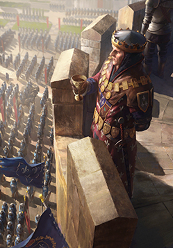
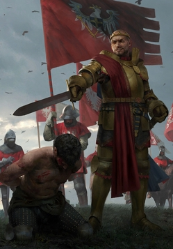
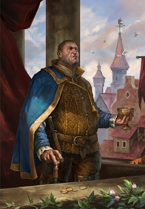

Выберите персонажа:
Геральт из Ривии
Геральт из Ривии, прозванный Белым Волком и Мясником из Блавикена — главный герой литературной саги и протагонист последующих игр, ведьмак из Школы Волка, профессиональный охотник на монстров, один из лучших фехтовальщиков Севера. Геральт обладает весьма примечательным, хотя и на редкость несносным характером. Годы, проведённые на большаке среди различного рода и степени маргинальных личностей, скитания по всему свету, бесчисленное количество схваток и передряг выработали в Геральте ряд качеств, которые в течение его приключений позволяли ему выживать и выходить относительным победителем из любой ситуации. Кроме того, он отличается сильнейшим гуманизмом, хотя и не питает иллюзий об устройстве мира и его обитателях и не наивен.

Цирилла Фиона Элен Рианнон
Принцесса Цирилла Фиона Элен Рианнон, более известная как Цири — один из центральных персонажей литературной саги и второй протагонист игры Ведьмак 3: Дикая Охота, дочь цинтрийской принцессы Паветты и князя Дани, внучка Калантэ и Рёгнера из Эббинга, королей Цинтры, дитя Старшей Крови, потомок Лары Доррен и Крегеннана из Лёда. Цирилла Фиона Элен Рианнон, легендарный «Ребёнок-Неожиданность», обещанный ведьмаку Геральту из Ривии её отцом за то, что тот расколдовал его во время пира при дворе Калантэ, родилась на островах Скеллиге в майский праздник Беллетэйн 1252 года в семье 15-летней принцессы Цинтры Паветты Фионы Элен, дочери Калантэ, и её мужа Дани.
Йеннифэр из Венгерберга
Йеннифэр из Венгерберга — один из основных персонажей литературной саги и игры Ведьмак 3: Дикая Охота, возлюбленная Геральта из Ривии, талантливая и могущественная чародейка, фактически приёмная мать Цириллы. Входила в состав последнего Совета Чародеев, позднее — в Ложу Чародеек, являлась неофициальной советницей короля Демавенда III, а также подругой Трисс Меригольд. Как и многие чародейки, Йеннифэр наделена весьма непростым, а порой просто невыносимым и вспыльчивым характером. Она известна своими сильными личностными качествами и интеллектом, а также мужеством и мудростью. Она умна, уверена в себе и обладает острым умом, хитростью и даже коварством, и её личностные способности идут рука об руку с необыкновенным магическим талантом.

Трисс Меригольд из Марибора
Трисс Меригольд из Марибора — второстепенный персонаж литературной саги и основной персонаж игровой серии, чародейка и целительница, один из самых молодых, но вместе с тем самых талантливых магов Севера, советница короля Фольтеста. Имеет близкие отношения с Геральтом, является подругой Йеннифэр, Цири и ведьмаков из Каэр Морхена. Трисс предстаёт светлым и мягким персонажем, ей не чужды стеснение, преданность, милосердие, сочувствие и сострадание. Трисс всегда жаждет помочь людям, не отказывает в помощи, также Меригольд очень любит людей и детей. Чародейка испытывает нелюбовь лишь к тем, кто пытается воспользоваться ею или открыто льстит, предпочитая рассказывать правду в глаза.

Лютик
Юлиан Альфред Панкрац виконт де Леттенхоф, более известный как Лютик — один из центральных персонажей литературной саги, а также последующей игровой серии, лучший друг и неизменный спутник Геральта, известнейший на весь Север трубадур и поэт, драматург и писатель, автор многочисленных произведений и завсегдатай королевских дворов. Лютик представляет собой полную противоположность Геральта: он почти не может постоять за себя, нагл, но при этом труслив, болтлив и патологически не способен держать язык за зубами, предприимчив, хвастлив, склонен к авантюрам, горделив и тщеславен. Он абсолютно лишен стыда и комплексов, любит быть в центре внимания и не упускает возможностей нажиться на своей славе.
Весемир
Весемир — второстепенный персонаж литературной саги, а также игр Ведьмак и Ведьмак 3: Дикая Охота, старейший, самый опытный и уважаемый ведьмак из Школы Волка, являвшийся её мастером и хранителем традиций Цеха. Являясь одним из немногих ведьмаков, переживших в прошлом нападение на Каэр Морхен, он выступал в роли наставника и практически отца легендарного Геральта из Ривии и ряда других охотников на чудовищ. Обладал широкими познаниями в области фехтования и монстрологии, что, главным образом, и преподавал своим ученикам. На вершине прожитых лет Весемир в целом имел довольно спокойный характер, и, в силу своего возраста и богатого жизненного опыта, обладал широкой мудростью и эрудицией. Он прекрасно разбирался в чудовищах и различных аспектах борьбы с ними, а также фехтовании, но не мог похвастаться серьёзными познаниями в алхимии, магии или травах.

Фольтест Темерский
Фольтест Темерский — второстепенный персонаж литературной саги, а также игр Ведьмак и Ведьмак 2: Убийцы королей, король Темерии, правивший приблизительно с 1231 по апрель 1271 года, князь Соддена, правитель Понтарии, сюзерен Махакама и сеньор-протектор Бругге, Ангрена, Заречья и Элландера. В ходе своего правления значительно укрепил и стабилизировал страну, установил твёрдую королевскую власть и поддерживал политическую стабильность. При поддержке Королевского Совета успешно руководил Темерией и армией в ходе Северных войн, присутствовал на совете в Хагге и участвовал в подписании Цинтрийского мира, занимал одну из лидирующих ролей в коалиции правителей всего Севера.
Радовид V Свирепый
Радовид V Свирепый — персонаж литературной саги и игровой серии, король Редании во второй половине XIII века, сын Визимира II и Гедвиги Маллеорской, младший брат Дальки и Милены. В ходе своего правления, присоединив во время Третьей Северной войны к Редании ослабленный Каэдвен и часть Хенгфорской Лиги, являлся основным противником Нильфгаарда на Континенте и сумел дать эффективный отпор неприятелю. Тем не менее, в результате неоднозначной внутренней политики в стране им был создан широкий репрессивный аппарат и была развязана кровавая охота на ведьм, жертвами которой стала значительная часть населения. Радовид по праву считается одним из могущественнейших правителей Севера. Он строгий и суровый владыка, наделённый несгибаемой волей и твёрдым нравом.
Королева Мэва
Мэва, также известная как Белая Королева — второстепенный персонаж литературной саги и протагонист игры Кровная вражда: Ведьмак. Истории, вдовствующая королева Лирии и Ривии. Имеет двух сыновей, Виллема и Анси, которых, впрочем, не слишком жалует, почти никак не заботясь об их судьбе. Мэва известна среди правителей Северных королевств своей мудростью, женской интуицией («Бьёт коротко, но точно в цель!») и красотой. Эти качества, впрочем, не помешали ей наряду с Демавендом, королём Аэдирна, всецело участвовать в полномасштабной войне с Нильфгаардом, едва не закончившейся для неё потерей своего королевства. Как лидер, она всегда ставит интересы своих народов превыше всего.

Хенсельт из Ард Каррайга
Хенсельт из Ард Каррайга по прозвищу Единорог — второстепенный персонаж литературной саги и игры Ведьмак 2: Убийцы королей, король Каэдвена и князь Бан Арда из рода Единорога, правивший, по меньшей мере, с 1221 по 1271/1272 год. Его амбициозное правление было ознаменовано рядом военных конфликтов, в том числе продолжением борьбы за Долину Понтара и территориальными спорами с Демавендом III за Нижнюю Мархию, а также радикальной борьбой с нелюдями и эльфскими партизанами. В ходе Северных войн Хенсельт уверенно правил своим королевством, присутствовал на совете в Хагге и участвовал в подписании Цинтрийского мира, но несмотря на определённые успехи так и не смог добиться величия своей страны.

Демавенд III
Демавенд III — персонаж литературной саги и игр Ведьмак 2: Убийцы королей и Кровная вражда: Ведьмак. Истории, 16-й король Аэдирна, правивший в середине XIII века, сын Вирфурила, отец Стенниса. Большая часть его правления была отмечена продолжением многолетних конфликтов с Каэдвеном, которым правил король Хенсельт, из-за плодородных земель Верхнего Аэдирна. Кроме того, Демавенд сражался в Первой и Второй Северных войнах против вторгшейся Нильфгаардской империи, являлся инициатором совета в Хагге, а по завершению второй кампании был участником подписания Цинтрийского мира. Король с неприязнью относился к чародеям, называя их «коварными старыми болтунами» и предпочитая для общения королевских посланников, и скоя'таэлям.

Брувер Гоог
Брувер Гоог — второстепенный персонаж игры Кровная вражда: Ведьмак. Истории, старейшина краснолюдов. Единолично управляет Махакамом и обладает огромными правами. Его покои находятся где-то под горой Карбон. Несмотря на то, что официально весь Махакам находится под властью Темерии и лично короля Фольтеста, любая попытка вмешаться в дела управления анклава гномов и краснолюдов под руководством Гоога чревата остановкой поставок железной руды, доспехов и оружия. Сам Брувер не поддерживает «белок», так как краснолюдская молодёжь уходит от работы. По словам Золтана, старейшина занят странными законами, не имеющими никакого смысла.

Эмгыр вар Эмрейс
Эмгыр вар Эмрейс, Деитвен Аддан ын Карн аэп Морвудд — персонаж литературной саги и игровой серии, император Нильфгаарда из династии Эмрейсов, правивший во второй половине XIII века, период чего был отмечен почти непрерывными войнами, посредством которых значительно расширились границы южной державы. Сын Фергуса вар Эмрейса, муж цинтрийской принцессы Паветты, затем Лже-Цириллы, отец Цириллы, кузен Анны-Генриетты и Сильвии-Анны, Эмгыр родился в 1220 году и взошёл на престол в результате переворота, случившегося приблизительно в 1257 году. Он сумел создать отличную армию и генеральный штаб, эффективное правительство, возвысил многих способных людей, невзирая на их низкое происхождение.

Узурпатор
Узурпатор — упоминаемый в литературной саге персонаж, не называемый по имени император Нильфгаарда, правивший с 1233 по 1257 год. Пришёл к власти путём государственного переворота, свергнув Фергуса вар Эмрейса. В 1233 году[2] не называемый по имени нильфгаардский аристократ совершил государственный переворот, свергнув императора Фергуса вар Эмрейса. Заняв трон, приказал подвергнуть его пыткам, чтобы принудить к сотрудничеству, однако пытки не дали нужного эффекта. Тогда нанятый Узурпатором чародей Браатенс на глазах низложенного правителя превратил его сына Эмгыра в чудовище — человекоподобного ежа. Фергус не дал себя сломить и был убит, а Эмгыра выпустили в лес и натравили на него собак.
Сигизмунд Дийкстра
Граф Сигизмунд Дийкстра, позже известный как Сиги Ройвен — второстепенный персонаж литературной саги и игры Ведьмак 3: Дикая Охота, бывший глава реданской разведки и видный политический деятель, сподвижник и, возможно, друг короля Редании Визимира II, позже — влиятельный преступный авторитет и лидер собственной группировки. Благодаря своим незаурядным навыкам и способностям получив доступ в высшие эшелоны власти Редании, в значительной мере контролировал и осуществлял внутреннюю политику государства, имел большое влияние и вес в различных кругах, в период междуцарствия являлся членом Регентского совета и одной из наиболее крупных фигур Реданского королевства, а в 1272 году предпринял попытку взять государственную власть в свои руки.
